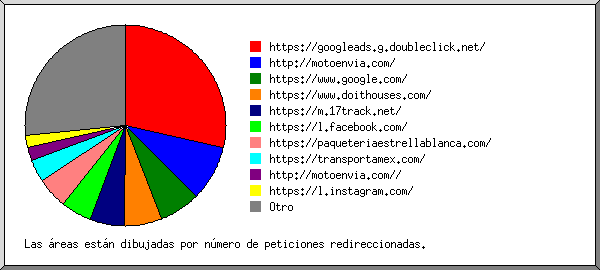

Estadísticas del servidor Web de motoenvia.com
Estadísticas del servidor Web de motoenvia.com
Programa iniciado a las Mar/30/Jun/2020 7:33 am.
Análisis de peticiones del Jue/07/May/2020 9:33 am al Mar/30/Jun/2020 6:41 am (53.88 días).
Estadísticas del servidor Web de motoenvia.comPrograma iniciado a las Mar/30/Jun/2020 7:33 am.
Análisis de peticiones del Jue/07/May/2020 9:33 am al Mar/30/Jun/2020 6:41 am (53.88 días).
(Ir a: Arriba | Resumen general | Informe mensual | Resumen diario | Resumen horario | Informe de dominios | Informe de organización | Informe de remitentes redirecionados | Informe de errores de remitentes | Informe de sitios remitentes | Informe de navegadores | Resumen de navegadores | Informe de Sistemas Operativos | Informe de códigos de estado | Informe de tamaño de archivos | Informe de Tipos de Archivo | Informe de Directorios | Informe de peticiones)
Los números entre paréntesis se refieren a 7 días al 30/Jun/2020 7:33 am.
Peticiones exitosas: 266 (0)
Promedio de peticiones exitosas por día: 4
Peticiones exitosas por página: 24 (0)
Peticiones no logradas: 181 (0)
Peticiones redireccionadas: 1,693 (51)
Archivos diferentes solicitados: 61 (656)
Sistemas diferentes atendidos: 5 (921)
Transferencia total: 15.37 megabytes (0 bytes)
Promedio de transferencia por día: 292.05 kilobytes (0 bytes)
(Ir a: Arriba | Resumen general | Informe mensual | Resumen diario | Resumen horario | Informe de dominios | Informe de organización | Informe de remitentes redirecionados | Informe de errores de remitentes | Informe de sitios remitentes | Informe de navegadores | Resumen de navegadores | Informe de Sistemas Operativos | Informe de códigos de estado | Informe de tamaño de archivos | Informe de Tipos de Archivo | Informe de Directorios | Informe de peticiones)
Cada unidad ( ) representa 1 petición de una página.
) representa 1 petición de una página.
| mes | No. pet. | Págs. | |
|---|---|---|---|
| May 2020 | 266 | 24 |   |
Mes de mayor tráfico: May 2020 (24 peticiones por páginas).
(Ir a: Arriba | Resumen general | Informe mensual | Resumen diario | Resumen horario | Informe de dominios | Informe de organización | Informe de remitentes redirecionados | Informe de errores de remitentes | Informe de sitios remitentes | Informe de navegadores | Resumen de navegadores | Informe de Sistemas Operativos | Informe de códigos de estado | Informe de tamaño de archivos | Informe de Tipos de Archivo | Informe de Directorios | Informe de peticiones)
Cada unidad () representa 1 petición de una página.
| día | No. pet. | Págs. | |
|---|---|---|---|
| Dom | 0 | 0 | |
| Lun | 0 | 0 | |
| Mar | 0 | 0 | |
| Mié | 0 | 0 | |
| Jue | 266 | 24 | |
| Vie | 0 | 0 | |
| Sáb | 0 | 0 |
(Ir a: Arriba | Resumen general | Informe mensual | Resumen diario | Resumen horario | Informe de dominios | Informe de organización | Informe de remitentes redirecionados | Informe de errores de remitentes | Informe de sitios remitentes | Informe de navegadores | Resumen de navegadores | Informe de Sistemas Operativos | Informe de códigos de estado | Informe de tamaño de archivos | Informe de Tipos de Archivo | Informe de Directorios | Informe de peticiones)
Cada unidad () representa 1 petición de una página.
| hr | No. pet. | Págs. | |
|---|---|---|---|
| 0 | 0 | 0 | |
| 1 | 0 | 0 | |
| 2 | 0 | 0 | |
| 3 | 0 | 0 | |
| 4 | 0 | 0 | |
| 5 | 0 | 0 | |
| 6 | 0 | 0 | |
| 7 | 0 | 0 | |
| 8 | 0 | 0 | |
| 9 | 7 | 0 | |
| 10 | 1 | 0 | |
| 11 | 0 | 0 | |
| 12 | 0 | 0 | |
| 13 | 76 | 3 |  |
| 14 | 108 | 16 | |
| 15 | 0 | 0 | |
| 16 | 60 | 5 |  |
| 17 | 0 | 0 | |
| 18 | 0 | 0 | |
| 19 | 0 | 0 | |
| 20 | 0 | 0 | |
| 21 | 0 | 0 | |
| 22 | 0 | 0 | |
| 23 | 14 | 0 |
(Ir a: Arriba | Resumen general | Informe mensual | Resumen diario | Resumen horario | Informe de dominios | Informe de organización | Informe de remitentes redirecionados | Informe de errores de remitentes | Informe de sitios remitentes | Informe de navegadores | Resumen de navegadores | Informe de Sistemas Operativos | Informe de códigos de estado | Informe de tamaño de archivos | Informe de Tipos de Archivo | Informe de Directorios | Informe de peticiones)
Listado de los dominios, ordenados por cantidad de tráfico.
| No. pet. | %bytes | dominio |
|---|---|---|
| 266 | 100% | [direcciones numéricas sin resolver] |
(Ir a: Arriba | Resumen general | Informe mensual | Resumen diario | Resumen horario | Informe de dominios | Informe de organización | Informe de remitentes redirecionados | Informe de errores de remitentes | Informe de sitios remitentes | Informe de navegadores | Resumen de navegadores | Informe de Sistemas Operativos | Informe de códigos de estado | Informe de tamaño de archivos | Informe de Tipos de Archivo | Informe de Directorios | Informe de peticiones)
Listado de las organizaciones, ordenadas por número de peticiones.
| No. pet. | %bytes | organización |
|---|---|---|
| 212 | 84.58% | 181.47 |
| 31 | 14.81% | 70 |
| 12 | 0.01% | 74 |
| 9 | 91 | |
| 2 | 0.60% | 54 |
(Ir a: Arriba | Resumen general | Informe mensual | Resumen diario | Resumen horario | Informe de dominios | Informe de organización | Informe de remitentes redirecionados | Informe de errores de remitentes | Informe de sitios remitentes | Informe de navegadores | Resumen de navegadores | Informe de Sistemas Operativos | Informe de códigos de estado | Informe de tamaño de archivos | Informe de Tipos de Archivo | Informe de Directorios | Informe de peticiones)

Listado de los 30 primeros URLs remitentes por número de peticiones redireccionadas, ordenados por número de peticiones redireccionadas.
(Ir a: Arriba | Resumen general | Informe mensual | Resumen diario | Resumen horario | Informe de dominios | Informe de organización | Informe de remitentes redirecionados | Informe de errores de remitentes | Informe de sitios remitentes | Informe de navegadores | Resumen de navegadores | Informe de Sistemas Operativos | Informe de códigos de estado | Informe de tamaño de archivos | Informe de Tipos de Archivo | Informe de Directorios | Informe de peticiones)
Listado de los URLs de remitentes, ordenados por número de peticiones no logradas.
| No. pet. | URL |
|---|---|
| 61 | http://motoenvia.com/ |
| 25 | http://motoenvia.com/cotizador/public/ |
| 1 | http://motoenvia.com/css/nice-select.css |
| 1 | http://motoenvia.com/cotizador/ |
(Ir a: Arriba | Resumen general | Informe mensual | Resumen diario | Resumen horario | Informe de dominios | Informe de organización | Informe de remitentes redirecionados | Informe de errores de remitentes | Informe de sitios remitentes | Informe de navegadores | Resumen de navegadores | Informe de Sistemas Operativos | Informe de códigos de estado | Informe de tamaño de archivos | Informe de Tipos de Archivo | Informe de Directorios | Informe de peticiones)
Listado de los sitios remitentes, ordenados por número de peticiones.
| No. pet. | sitio |
|---|---|
| 217 | http://motoenvia.com/ |
(Ir a: Arriba | Resumen general | Informe mensual | Resumen diario | Resumen horario | Informe de dominios | Informe de organización | Informe de remitentes redirecionados | Informe de errores de remitentes | Informe de sitios remitentes | Informe de navegadores | Resumen de navegadores | Informe de Sistemas Operativos | Informe de códigos de estado | Informe de tamaño de archivos | Informe de Tipos de Archivo | Informe de Directorios | Informe de peticiones)
Listado de los navegadores que representan, por lo menos, 1 petición de una página, ordenados por número de peticiones por páginas.
| No. pet. | Págs. | Navegador |
|---|---|---|
| 182 | 19 | Mozilla/5.0 (Macintosh; Intel Mac OS X 10_15_4) AppleWebKit/605.1.15 (KHTML, like Gecko) Version/13.1 Safari/605.1.15 |
| 31 | 2 | Mozilla/5.0 (Windows NT 10.0; Win64; x64) AppleWebKit/537.36 (KHTML, like Gecko) Chrome/81.0.4044.129 Safari/537.36 |
| 30 | 2 | Mozilla/5.0 (Linux; Android 9; SM-A307G) AppleWebKit/537.36 (KHTML, like Gecko) Chrome/81.0.4044.117 Mobile Safari/537.36 |
| 1 | 1 | Slackbot-LinkExpanding 1.0 (+https://api.slack.com/robots) |
| 22 | 0 | [no listados: 2 Navegadores] |
(Ir a: Arriba | Resumen general | Informe mensual | Resumen diario | Resumen horario | Informe de dominios | Informe de organización | Informe de remitentes redirecionados | Informe de errores de remitentes | Informe de sitios remitentes | Informe de navegadores | Resumen de navegadores | Informe de Sistemas Operativos | Informe de códigos de estado | Informe de tamaño de archivos | Informe de Tipos de Archivo | Informe de Directorios | Informe de peticiones)

Listado de los navegadores que representan, por lo menos, 1 petición de una página, ordenados por número de peticiones por páginas.
| no. | No. pet. | Págs. | Navegador |
|---|---|---|---|
| 1 | 243 | 23 | Safari |
| 182 | 19 | Safari/605 | |
| 61 | 4 | Safari/537 | |
| 2 | 1 | 1 | Slackbot-LinkExpanding 1.0 (+https: |
| 1 | 1 | Slackbot-LinkExpanding 1.0 (+https://api | |
| 22 | 0 | [no listados: 2 Navegadores] |
(Ir a: Arriba | Resumen general | Informe mensual | Resumen diario | Resumen horario | Informe de dominios | Informe de organización | Informe de remitentes redirecionados | Informe de errores de remitentes | Informe de sitios remitentes | Informe de navegadores | Resumen de navegadores | Informe de Sistemas Operativos | Informe de códigos de estado | Informe de tamaño de archivos | Informe de Tipos de Archivo | Informe de Directorios | Informe de peticiones)
Listado de los sistemas operativos, ordenados por número de peticiones por páginas.
| no. | No. pet. | Págs. | SO |
|---|---|---|---|
| 1 | 182 | 19 | Macintosh |
| 2 | 30 | 2 | Unix |
| 30 | 2 | Linux | |
| 3 | 31 | 2 | Windows |
| 31 | 2 | Windows NT | |
| 4 | 2 | 1 | Robots |
| 5 | 21 | 0 | Sistema Operativo desconocido |
(Ir a: Arriba | Resumen general | Informe mensual | Resumen diario | Resumen horario | Informe de dominios | Informe de organización | Informe de remitentes redirecionados | Informe de errores de remitentes | Informe de sitios remitentes | Informe de navegadores | Resumen de navegadores | Informe de Sistemas Operativos | Informe de códigos de estado | Informe de tamaño de archivos | Informe de Tipos de Archivo | Informe de Directorios | Informe de peticiones)
Listado de los códigos de estado, por orden numérico.
| No. pet. | cód. de estado |
|---|---|
| 231 | 200 OK |
| 1 | 206 Contenido parcial |
| 1693 | 301 Documento desplazado permanentemente |
| 34 | 304 Sin modificar desde el último acceso |
| 113 | 404 Documento no encontrado |
| 68 | 500 Error interno del servidor |
(Ir a: Arriba | Resumen general | Informe mensual | Resumen diario | Resumen horario | Informe de dominios | Informe de organización | Informe de remitentes redirecionados | Informe de errores de remitentes | Informe de sitios remitentes | Informe de navegadores | Resumen de navegadores | Informe de Sistemas Operativos | Informe de códigos de estado | Informe de tamaño de archivos | Informe de Tipos de Archivo | Informe de Directorios | Informe de peticiones)
| tamaño | No. pet. | %bytes |
|---|---|---|
| 0 | 36 | |
| 1B- 10B | 0 | |
| 11B- 100B | 21 | 0.01% |
| 101B- 1kB | 23 | 0.07% |
| 1kB- 10kB | 116 | 2.91% |
| 10kB-100kB | 49 | 12.91% |
| 100kB- 1MB | 14 | 19.50% |
| 1MB- 10MB | 7 | 64.60% |
(Ir a: Arriba | Resumen general | Informe mensual | Resumen diario | Resumen horario | Informe de dominios | Informe de organización | Informe de remitentes redirecionados | Informe de errores de remitentes | Informe de sitios remitentes | Informe de navegadores | Resumen de navegadores | Informe de Sistemas Operativos | Informe de códigos de estado | Informe de tamaño de archivos | Informe de Tipos de Archivo | Informe de Directorios | Informe de peticiones)
Listado de las extensiones que representan, por lo menos, 0.1% del tráfico, ordenadas por cantidad de tráfico.
| No. pet. | %bytes | extensión |
|---|---|---|
| 8 | 64.60% | .jpg [JPEG graphics] |
| 96 | 18.93% | .png [PNG graphics] |
| 24 | 10.78% | .js [JavaScript code] |
| 74 | 2.48% | .css [Cascading Style Sheets] |
| 15 | 2.44% | .woff |
| 24 | 0.75% | [directorios] |
| 25 | 0.02% | [no listadas: 3 extensiones] |
(Ir a: Arriba | Resumen general | Informe mensual | Resumen diario | Resumen horario | Informe de dominios | Informe de organización | Informe de remitentes redirecionados | Informe de errores de remitentes | Informe de sitios remitentes | Informe de navegadores | Resumen de navegadores | Informe de Sistemas Operativos | Informe de códigos de estado | Informe de tamaño de archivos | Informe de Tipos de Archivo | Informe de Directorios | Informe de peticiones)
Listado de los directorios que representan, por lo menos, 0.01% del tráfico, ordenados por cantidad de tráfico.
| No. pet. | %bytes | directorio |
|---|---|---|
| 111 | 55.26% | /cotizador/ |
| 55 | 37.50% | /img/ |
| 16 | 4.65% | /js/ |
| 38 | 1.07% | /css/ |
| 8 | 1.04% | /fonts/ |
| 17 | 0.47% | [directorio raíz] |
| 21 | 0.01% | /.well-known/ |
(Ir a: Arriba | Resumen general | Informe mensual | Resumen diario | Resumen horario | Informe de dominios | Informe de organización | Informe de remitentes redirecionados | Informe de errores de remitentes | Informe de sitios remitentes | Informe de navegadores | Resumen de navegadores | Informe de Sistemas Operativos | Informe de códigos de estado | Informe de tamaño de archivos | Informe de Tipos de Archivo | Informe de Directorios | Informe de peticiones)
Listado de los archivos que representan, por lo menos, 20 peticiones, ordenados por número de peticiones.
| No. pet. | %bytes | última hora | archivo |
|---|---|---|---|
| 266 | 100% | 21/May/2020 11:32 pm | [no listados: 61 archivos] |